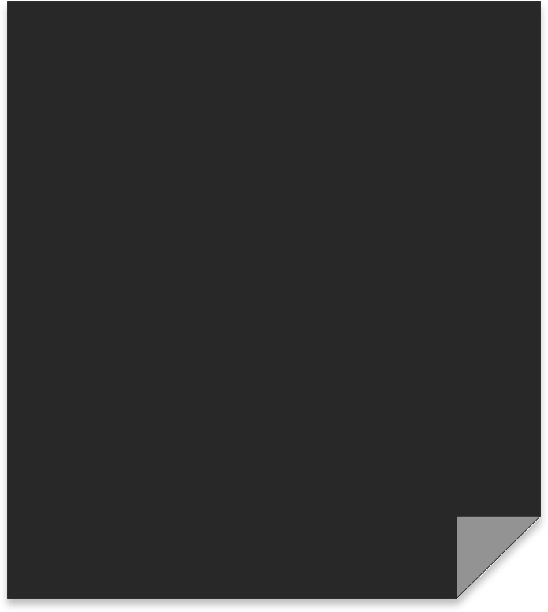
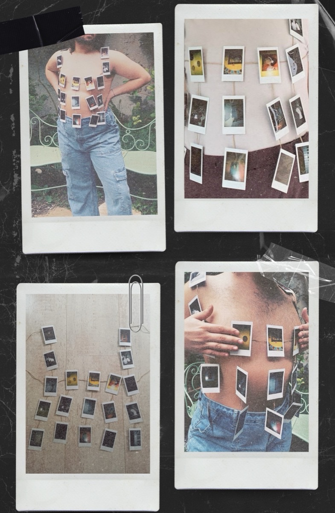

Anis Slimani
Inter-disciplinary Creative


PENSER PAR SOI-MÊME is a portable photo exhibition inspired by Marcel Proust’s questionnaire.
Combining modern fashion references with analog photography, the project highlights the long-standing connection between the two art forms. It explores self-expression and identity, inviting viewers to reflect on how fashion and photography together capture individuality and culture.
PENSER PAR SOI-MÊME is a portable photo exhibition inspired by Marcel Proust’s questionnaire.
Combining modern fashion references with analog photography, the project highlights the long-standing connection between the two art forms. It explores self-expression and identity, inviting viewers to reflect on how fashion and photography together capture individuality and culture.